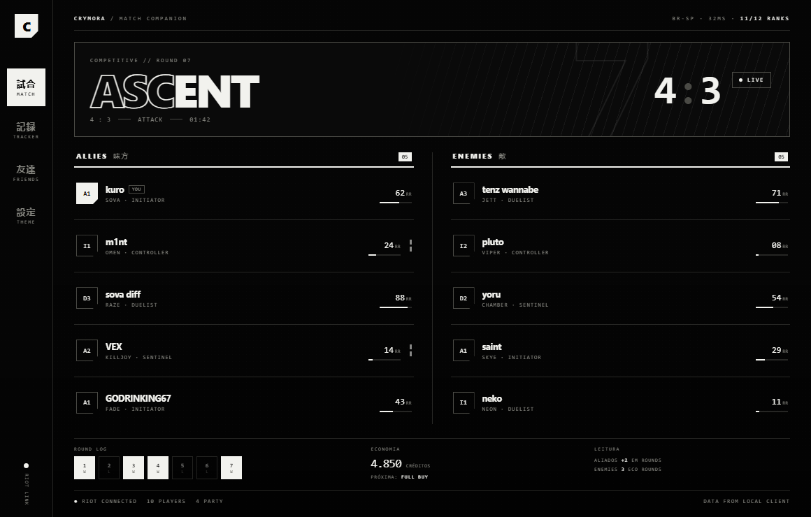
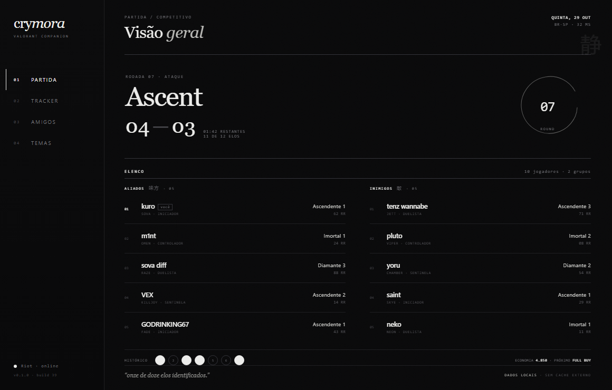
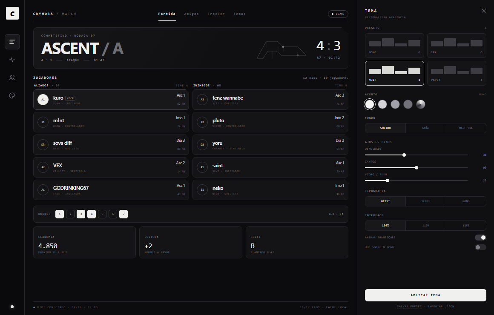

Painéis retos, hachura e retícula, tipografia condensada e toques de japonês. É a direção mais “streetwear / anime”, com personalidade forte e leitura rápida.

Serifa editorial, muito respiro, linhas finas e um ensō discreto. O clima anime aparece no detalhe, não no grito — é a opção mais elegante e atemporal.

Cards compactos, cantos cortados e um painel de temas ao vivo: presets, acento, fundo, densidade, cantos, blur, tipografia, escala e exportação. É a base mais prática.

Usar a estrutura editorial e o clima monocromático do Ink como base do app, aplicar o painel de temas do Noir para a personalização e oferecer o tratamento de painéis/halftone do Manga como preset. Assim o Crymora ganha identidade própria sem perder a flexibilidade que você pediu.